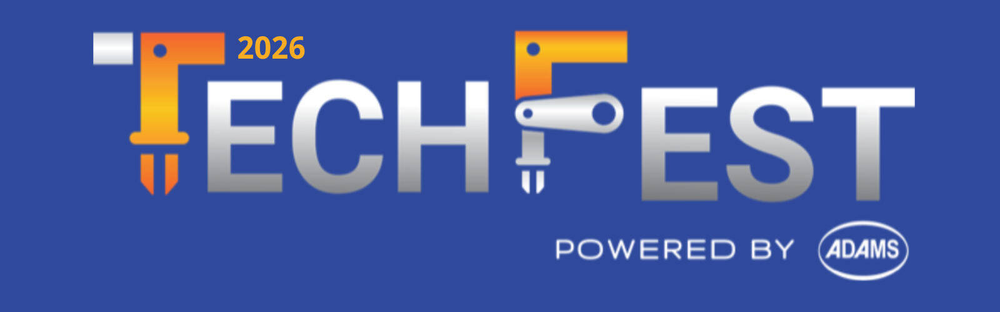

Welcome to Tech Fest 2026
Tech Fest 2026 is the biggest student technology event organized by
Apex College. It is a place where curious learners, creative
developers, young entrepreneurs, teachers, and technology
professionals come together to exchange ideas and build meaningful
connections.
Join us for a full day of competitions, project exhibitions, practical
workshops, inspiring presentations, and networking opportunities.
Whether you are an experienced programmer or simply interested in
technology, there will be something valuable for you.
Date: August 15, 2026
Time: 9:00 AM to 5:30 PM
Venue: Apex College Auditorium, Kathmandu
Register for Tech Fest 2026
About the Event
Tech Fest was created to give students a platform where they can
demonstrate their technical skills, learn beyond the classroom, and
turn creative ideas into real projects. The event encourages teamwork,
problem-solving, communication, and responsible use of technology.
During the event, participants will meet students from different
academic programs and explore topics such as web development,
artificial intelligence, robotics, cybersecurity, digital design, and
entrepreneurship. Visitors can observe projects, ask questions, attend
learning sessions, and vote for their favorite innovations.
Learn more about Tech Fest
Event Highlights
Student Project Exhibition
Explore original websites, mobile applications, robots, smart
devices, games, and research projects created by talented students.
Project teams will explain the problems they identified, the tools
they used, and the lessons they learned while building solutions.
Technology Talks
Listen to teachers, graduates, and industry professionals share
practical knowledge about current technology careers. These talks
will help students understand industry expectations and discover
possible paths for future study and employment.
Networking and Collaboration
Meet people with similar interests, discuss ideas, and find
potential teammates for future projects. The event provides a
friendly environment where participants can build confidence and
develop professional relationships.
Competitions and Activities
Participants can test their knowledge, creativity, and teamwork
through several exciting challenges. Winners will receive
certificates, prizes, and recognition during the closing ceremony.
-
Coding Challenge: Solve programming problems within
a limited time.
-
Web Design Contest: Create a useful and
user-friendly website based on a given topic.
-
Project Pitch: Present an innovative technology
idea to a panel of judges.
-
Tech Quiz: Compete in teams and answer questions
about computers, the internet, and emerging technologies.
-
Gaming Tournament: Participate in friendly
competitive gaming matches.
Schedule Preview
Main activities for August 15, 2026
| Time |
Activity |
Location |
| 9:00 AM |
Registration and Welcome |
Main Entrance |
| 10:00 AM |
Opening Ceremony and Keynote |
Auditorium |
| 11:00 AM |
Competitions and Project Exhibition |
Event Halls |
| 2:00 PM |
Workshops and Technology Talks |
Classrooms |
| 4:30 PM |
Awards and Closing Ceremony |
Auditorium |
View the complete event schedule
Who Can Participate?
Tech Fest 2026 welcomes college and school students, teachers,
technology enthusiasts, and invited guests. Students may register as
visitors or apply to participate in competitions and project
exhibitions. Some activities have limited spaces, so early
registration is recommended.
Participants should bring a valid student identification card and
arrive before the registration desk closes. Competition participants
will receive detailed rules and reporting times after completing their
registration.
Ready to Join?
Become part of a day filled with learning, creativity, teamwork, and
inspiration. Register today and share your passion for technology with
the Tech Fest community.
Complete your registration